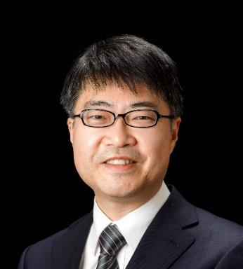

|
|
|

|
|
|---|---|
Supported by:


Keynote Addresses
Keynote I: Tuesday, January 14, 9:00-10:30
Skin electronics for continuous health monitoring
Speaker: Takao Someya (The University of Tokyo)
 Abstract: Flexible and stretchable hybrid electronics are expected to open up a new class of applications ranging from healthcare, medical, sports, wellness, human-machine interfaces, and new IT fashion. In particular, to expand emerging applications of wearable technologies, printed flexible biomedical sensors have attracted much attention recently. In order to minimize the discomfort of wearing sensors, it is highly desirable to use soft electronic materials particularly for devices that come directly into contact with the skin and/or biological tissues. In this regard, electronics manufactured on thin polymeric films, elastomeric and textile substrates by printing are very attractive. In this talk, I will review recent progresses of wearables, smart apparels, and artificial electronic skins (E-skins) from the contexts of high-precision and long-term vital signal monitoring. Furthermore, the issues and the future prospect of wearables and beyond wearables will be addressed.
Keynote II: Tuesday, January 14, 12:00-12:40
Edge-to-Cloud Innovations for Inclusive AI
Speaker: Xiaoning Qi (Alibaba Group)
Abstract: Technology has propelled us into an era of data and AI, and computing power is the force behind it all. At the core of computing power is the tiny yet mighty chip. T-Head has formed a full-stack chip system that facilitates edge-to-cloud integration, including processor IPs, SoC platforms, and AI chips. T-Head's success in hardware-software innovation is built on its self-developed chip structure and bolstered by Alibaba DAMO Academy's leading AI algorithms and AliOS operating system.
Keynote III: Wednesday, January 15, 9:00-10:00
Design Automation for Customizable Computing
Speaker: Jason Cong (University of California, Los Angles)
Abstract: With large-scale deployment of FPGAs in both private and public clouds in the past a few years, customizable computing is transitioning from advanced research into mainstream computing. Customized accelerators have demonstrated significant performance and energy efficiency benefits for a wide range of applications. However, efficient design and implementation of various accelerators on FPGAs remains a formidable barrier to many software programmers, despite the recent advances in high-level synthesis. This calls for a community-wide effort to “demacratize customizable computing”. In this talk, I shall first discuss various research opportunit ies associated with design automation for customizable computing. Then, I shall highlight our recent progress on source-code level transformation and optimization for customizable computing, including support of high-level domain-specific languages (DSL) for deep learning (e.g. Caffe), imaging processing (e.g. Halide), and big-data processing (e.g. Spark), and suppoort of automated compilation to customized microarchictecture templates, such as systolic arrays, stencils, and CPPs (composable parallel and pipelined).
Keynote IV: Wednesday, January 15, 11:30-12:10
Huge development of RISC-V arising from IOT spurt
Speaker: Yingwu Zhang (GigaDevice Semiconductor (Beijing) Inc)
Abstract:
With the huge demand of IoT, wearable device, AI, automotive, intelligent manufacturing and new emerging applications, which
offers MCU greater opportunities as well as more challenges. We should find the optimized solutions and technologies for these obstacles
in different scenarios, such as larger data processing and faster processing speed in automotive, ultra-low power in wearable and IoT,
interconnection and data reliability and post Moore Era.
As a leading company in 32-bit general MCU market, GigaDevice provided the low power, connectivity, security design in both ARM
and RISC-V MCUs. In this speech, we will unveil our RISC-V core solutions and advantage design techniques, like modular design,
user extension instructions and ecological development and active community, and the security design focus on code protection, data
encryption, safe downloading, security boot and reliability design.
Keynote V: Wednesday, January 15, 17:30-18:10
Emulation View of Synopsys Verification Continuum Platform
Speaker: Michael Wang (Synopsys)
Abstract:
Increasing System-on-Chip (SoC) complexity and software content combined with rising time-to-market pressures are driving the
need for a next-generation verification solution that spans pre-silicon verification, post-silicon validation and early software bring-up.
Synopsys' Verification Continuum platform, developed in collaboration with market leaders, unites Synopsys' best-in-class
verification solutions, facilitating a seamless transition between them and improving SoC time-to-market by months. Verification
Continuum is architected with FPGA-based emulation and prototyping, delivering the speed and scalability required for software bringup
and SoC verification.
By natively integrating the industry’s fastest emulator, ZeBu Server 4, with other Synopsys’ verification engines in the Verification
Continuum Platform, like Virtualizer virtual prototyping, VCS simulation, HAPS prototyping, SpyGlass static and Verdi debug, many
effective emulation solutions are created and help improve design verification and software bring-up productivity significantly.
In addition, on top of the Verification Continuum Platform, Synopsys develops domain specific solutions, to meet special technical
requests from Networking, AI and 5G sectors.
All above emulation technologies and solutions will be discussed in this presentation.
Keynote VI: Thursday, January 16, 9:00-10:00
Explore the next tides of EDA
Speaker: Lifeng Wu (Empyrean Software)
Abstract:
EDA, one of the most critical pillars of semiconductor industry, has been supporting Moore’s law for four decades. On the other hand,
recent EDA growth in last two decades is mostly driven by applications rather than fundamental breakthrough in EDA research. What
are the possible directions for future EDA tides? From our point of view, computing platform (heterogeneous computing, Cloud
computing, ARM-based massive-threading architecture) and AI based algorithm will provide more dimensions for EDA research.
We will demonstrate some solutions powered by heterogeneous computing platform and machine-learning algorithms.